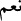
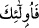
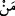

kimseler cehennemliktirler. Onlar orada devamlı kalırlar.
82. İman edip yararlı iş yapanlara gelince onlar da cennetliktirler. Onlar orada
devamlı kalırlar.
Âyetin (
) “hayır” diye başlayan bölümü, olumsuzluktan sonra işin tam tersine
olduğunu isbât için gelmiştir. Bu kelime, bir olumsuzluk cevâbıdır. Oysa (
) “Evet”
müsbet cevablarda kullanılır. Mânâ şöyle olmaktadır: “Ey yahûdîler, siz ateşin ancak
sayılı birkaç günde size dokunacağını söylediniz. Hayır o ateş size “onlar orada ebedî
kalıcıdırlar” âyetinde de olduğu gibi, ebedî saracaktır.” Burada ateşin ebedî olarak
içine alması da iki şarta bağlandı: Günah işlemeleri ve o günahın onları tümüyle
kuşatması.
“Kesb”, (kazanmak) normalde bir menfaat elde etmede kullanılır. Burada olduğu gibi,
bir zararın te’mîninde kullanılması ise istihzâ içindir.
“Günah”dan maksad, büyük günahlardan herhangi biridir. “Günahın onları kuşatması,
tamamen bir düşmanın başka bir düşmanı kuşatması gibi, her taraftan kalb, dil ve el ile
kuşatmasıdır. Böyle bir durum ancak kâfirde olur. Bundan dolayıdır ki “selef-i sâlihîn”,
“seyyie” kelimesini “küfür” mânâsına almışlardır.
(
) ile başlayan bölümde “onlar” diyerek, çoğul kelimenin kullanılış sebebi (
) kelimesinin “her kim” mânâsına alınmasından ve çoğulu da kapsayan anlamındandır.
İşte günah kazanmış ve günahları da kendilerini kuşatmış kimseler, dünyâda Allah’ın
âyetlerini yalanlama, tahrîf etme, iftirâ atma v.b. şeyleri yapma derecelerine göre,
âhırette cezâlandırılacaklardır.
“Onlar ateşte ebedî kalıcıdırlar”. Nerde onların: “Yedi veya kırk gün sonra ateşten
kurtulacağız” terâneleri? Bu cümle, hâl cümlesi sayılarak nasb mahalline konur. Çünkü
başka bir yerde “Cehennem ashâbı, ateşte ebedî kalıcılar olarak” diye burayı da içine
alan bir açıklama vardır. Bu da hâl olduğunu gösterir.
Âyetten de kolayca anlaşılacağı gibi, ebedîlik sâdece kâfirler içindir. Büyük günah
işleyenlerin de aynı duruma düşeceğini belirten bir delîl yoktur.
“Allah’ı, tasdîk edip, Peygamber’e inanan, farzları yapıp, günahlardan sakınanlar,
onlar da cennet ehlidirler. Orada ebedî kalıcıdırlar; ne ölürler, ne de ordan çıkarılırlar.”
Kulları kimi zaman teşvik, kimi zaman sakındırma, kimi zaman müjde, kimi zaman
korku ile irşâd etme hikmetinin bir gereği olarak ilâhî sünnet; va’d yâni cennetle
müjdeleme ve vaîd yâni cehennemle korkutmayı bir arada getirmektedir. Çünkü insan,
lütuf ve kahr ile kemâle erer ve Allah’ın cennetini kazanır.
Hikâye olunduğuna göre, bir şeyhin bir mürîdi vardı. Şeyh, mürîdine: “Ebû Yezîd’i
görmen, senin şu çalışmandan daha hayırlıdır” dedi. Mürîd “Cenâb-ı Hakk günde yetmiş
defa tecellî ediyor. Hâl böyle iken yaratılmış bir insanı görmem nasıl hayırlı olabilir?”
diye düşündü. Daha sonra beraberce Ebû Yezîd’in evine gittiler. Hanımı, onun odun